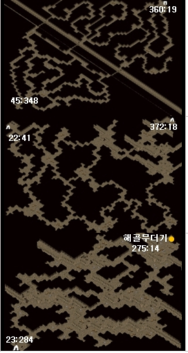
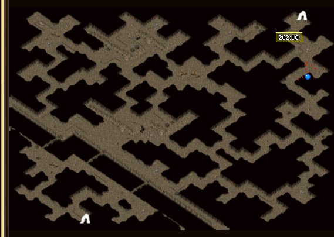
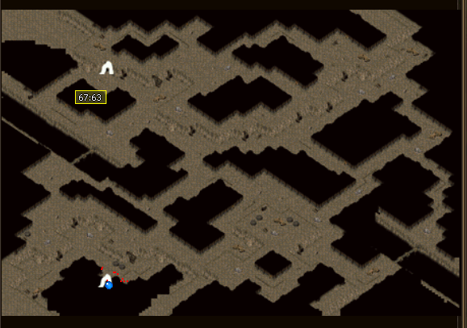
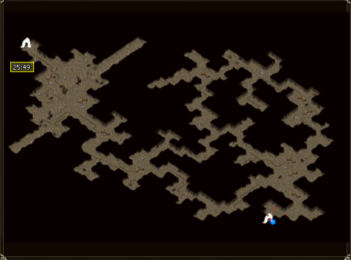
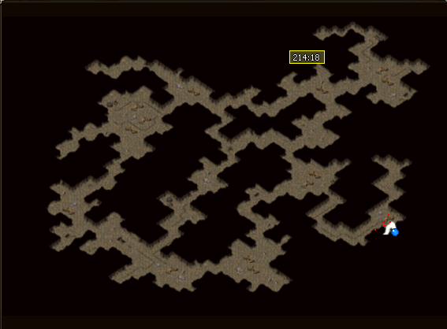
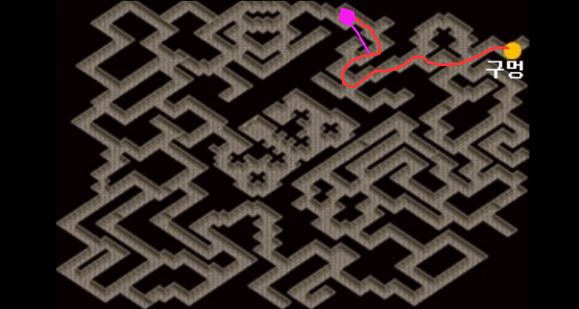
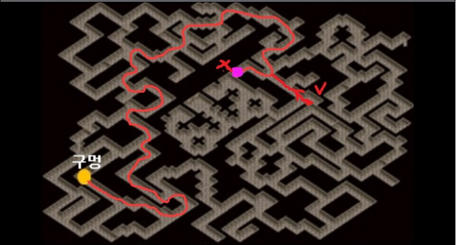
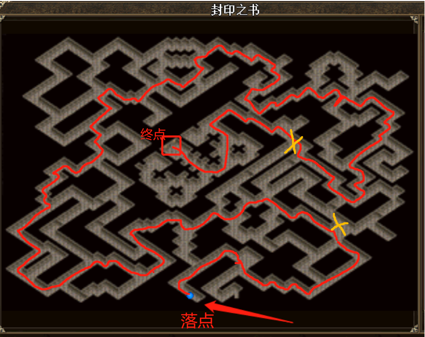

金龙全流程攻略
前期准备
在150os下最新版本客户端，可以下载麻辣小鱼整合包。否则看不到蛇谷新怪。
毒蛇山谷矿区 → 昆虫洞穴

- 三张图都可以飞随机
- 第三张图开始是虫洞怪
- 最后一张图是地图钻出来的僵尸，注意不要提前引起来
昆虫洞穴 → 毒蛇迷宫
- 昆虫一层：门在
262, 18

- 昆虫二层：门在
67, 63

- 昆虫三层：门在
25, 49

- 昆虫四层：骷髅堆在
214, 18，有一个物免龙守关

毒蛇迷宫 → 龙蛇川
- 蛇谷迷宫1F：这层的落点是随机的，一定要YY交流，汇合

- 蛇谷迷宫2F：千万不要掉其他的洞

- 蛇谷迷宫3F：千万不要掉入洞里！！！！！！！！！

龙蛇川